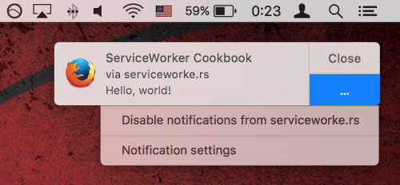
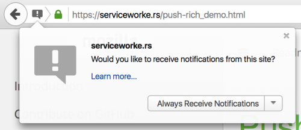
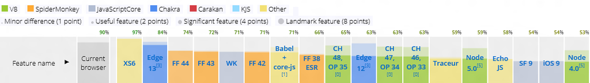
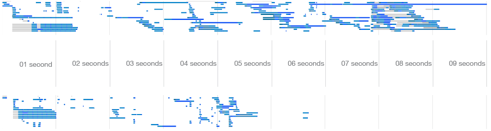

Bleeding Edge Web: January 2016
Announcements
News from the Bleeding Edge
— Corey Butler (@goldglovecb)
Intro to Web Components
— Corey Butler (@goldglovecb)
Polymer & PolyRest
— Pete Carapetyan
Lightning Talks
- Preview of Chassis: A UI Unframework (Corey)
- Preview of NGN: Microservices w/ Docker+Node.js (Corey)
- JavaScript Job Market in 2016 (Ankit Patel)
- CSS Modules (Alden Daniels)
- Web Components w/ VueJS (Ted Patrick)
Thanks to our venue sponsor:
Thanks to our food sponsor:
News from the
Bleeding Edge
Browser Pop Quiz
Last version check — October 2015:
Chrome 47 & 48
var basketOfApples = ['🍎', '🍏', '🍎', '🍏', '🌰', '🍎', '🍏'];
if (basketOfApples.includes('🌰')) {
ChromeSamples.log('Your basket of apples contains a chestnut.');
}
// The old way still "works"...
if (basketOfApples.indexOf('🌰') !== -1) {
ChromeSamples.log('Your basket of apples contains a chestnut.');
}
Rest parameters (ES6)
function listAnimalsArrows(...animals) {
animals.forEach(animal => ChromeSamples.log(animal));
}
listAnimalsArrows('🐯', '🐰', '🐘', '🐴', '🐥');
Chrome (cont...)
requestIdleCallback allows scheduling a task to run when the browser is idle. This makes it possible to perform background work on the main event loop, without impacting latency-critical events such as animation and input response.
requestIdleCallback(function (deadline) {
while (deadline.timeRemaining() > 0)
doWorkIfNeeded();
});
Chrome (cont...)
- Unprefixed CSS Writing Modes with syntax updates
CSS Writing Modes Level 3 without "webkit" prefix, along with syntax updates to the most recent CR.
As part of the work, a non-standard value "horizontal-bt" is removed from -webkit-writing-mode.
- min-width/height fixes & auto implementation for flex items
- 5 million "safe browsing" messages.
Chrome Devtools Security Panel
- SSL Certificate Validation
- Subresource security (does the site use insecure HTTP resources?)
- View TLS Connection
- More Details

Firefox Service Worker & Push Notifications


self.addEventListener('push', function(event) {
event.waitUntil(
self.registration.showNotification('Example Notification', {
body: 'Hello, world!',
})
);
})
*Partial support in Chrome
Aside: brotli compression
What is it? Brotli is a compression algorithm from Google.
- Brotli outperforms gzip for typical web assets (e.g. css, html, js) by 17–25%.
- Brotli -11 density compared to gzip -9:
- html (multi-language corpus): 25% savings
- js (alexa top 10k): 17% savings
- minified js (alexa top 10k): 17% savings
- css (alexa top 10k): 20% savings
Safari 9.1
Release Notes
Picture Element Support
<picture>
<source media="(min-width: 1000px)" srcset="picture_large.jpg">
<source media="(min-width: 500px)" srcset="picture_small.jpg">
<img src="picture_default.jpg">
</picture>
Better web inspector response times
WebGL rendering exposed to detect hardware capabilities.
Edge 10586
Primarily bug fixes.
ES2015 support increased to 90%

Brave
The new Brave browser blocks all the greed and ugliness on
the Web that slows you down and invades your privacy. Then
we put clean ads back, to fund website owners and Brave
users alike. Users can spend their funds to go ad-free
on their favorite sites.
It's amazing how fast a page loads when you strip away
everything but the real content.

- Led by Brendan Eich (Inventor of JavaScript)
- Brave blocks harmful advertising
- Brave redirects sites to HTTPS
- Brave blocks Tracking Pixels and Tracking Cookies
- Open Source (github.com/brave)
Thanks!
 ←
→
←
→
/
#